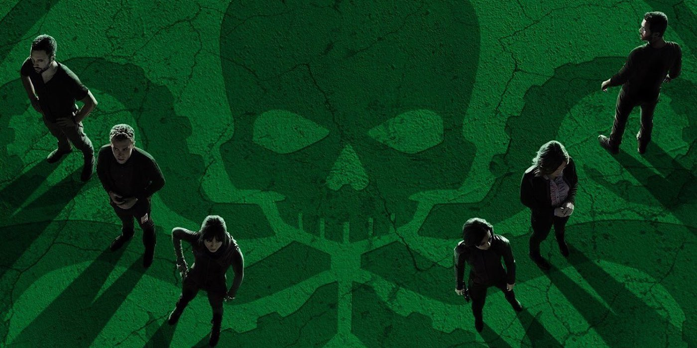
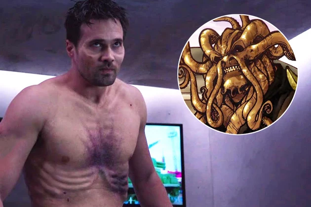
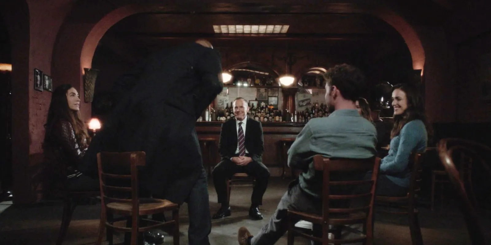

Diffusion : 2013 – 2020
Créateurs : Joss Whedon, Jed Whedon, Maurissa Tancharoen
Genre : Action, Science-fiction
Musique : Bear McCreary
Acteurs principaux : Clark Gregg, Ming-Na Wen, Chloe Bennet, Iain De Caestecker, Elizabeth Henstridge
Note globale : 3,5 / 5
Une série Marvel qui dépasse son statut de spin-off. Malgré des débuts parfois hésitants et des saisons inégales, Agents of S.H.I.E.L.D. finit par devenir une aventure très attachante portée par ses personnages et des arcs narratifs ambitieux comme HIVE ou le Framework.
⚠️ Attention : cette critique contient des spoilers sur la série Agents of S.H.I.E.L.D.
L'évolution des ressentis
Au début je regardais la série surtout parce que c'était du Marvel, mais au fil des saisons je me suis rendu compte que je restais surtout pour les personnages.
L'histoire globale de la série est pas mal, j'ai senti une forte amélioration sur les personnages et ce que les saisons racontent. La CGI n'était pas à plaindre, elle était bonne pour une série qui se diffusait seulement à la télévision.
Saison 1
La saison 1 est vraiment correcte, on sent l'ancien style du MCU et les intrigues sont intéressantes, malheureusement c'est l'époque où les épisodes sont répétitifs et souvent rallongés. Les personnages sont attachants. L'histoire est bien construite et le développement de Skye est satisfaisant. Le projet CENTIPEDE était vraiment une bonne idée avec Deathlok en introduction.

Saison 2
La saison 2 suit bien la saison 1 avec beaucoup d'intrigues mais trop emmêlées, que ce soit la trahison de Ward, la destruction du S.H.I.E.L.D., la reconstruction du S.H.I.E.L.D., les trahisons, les nouveaux personnages aussi... et j'en passe. C'était sympa mais je soufflais beaucoup et je me suis perdu sur beaucoup d'aspects. L'arc des Inhumains était grave cool mais encore une fois trop sur la rallonge sur la découverte des pouvoirs et méta-humains. Afterlife est vraiment une zone intéressante à découvrir et son histoire aussi. L'histoire de TAHITI aussi était bonne, une bonne intrigue qui, dans le futur, sera remplie de conséquences pour Coulson et montre la dureté de cette épreuve.

Saison 3
La saison 3 et son début sont sympas, Skye aide les Inhumains dans la nature, le S.H.I.E.L.D. n'est plus aidé par le gouvernement et il y a l'apparition de LASH. C'était un début fort mais pas percutant. Alors que le reste de la saison c'est vraiment INCROYABLE !! Littéralement l'un des meilleurs arcs de la série, HIVE !!! Ce méchant est si bien introduit et important, c'était vraiment incroyable !! Même l'évolution du S.H.I.E.L.D. et des personnages est incroyable dans cet arc.

Saison 4
Saison 4 : Le début avec Ghost Rider est stylé mais le personnage est gâché par un mauvais traitement narratif. En revanche, l’arc du Framework est ingénieux : du pur cinéma, avec des révélations, des tensions et des émotions intenses. Le docteur Fitz y est confirmé comme mon personnage préféré. Dans le Framework, il devient un antagoniste pur et effrayant, et on voit à quel point il manipule et terrorise. La relation entre Fitz et Simmons est magnifique, et la dynamique Quake–Coulson est extrêmement émouvante. Des personnages comme Deke ou Bobbi sont également incroyablement “goatesques” et apportent une vraie couleur à la série.

Saison 5
La saison 5 n'était vraiment pas intéressante, je sentais que la série ne se trouvait plus et cherchait à trouver toujours ce PLUS pour impressionner et montrer que l'univers du MCU est grand et rempli de mystère et de danger. L'arrivée dans le futur était OK, pas inintéressante mais pas si bien que ça, le second arc sur Quake la destructrice du monde était un peu mieux, et il y avait un peu plus de tension. Les Kree étaient sympas et forts mais si faibles en même temps par moment... La générale Hale était intéressante et la voir construire Hydra de nouveau était cool mais bon, sa fille a tout fait foirer.
Graviton était vraiment stylé et inattendu. L'idée d'associer Talbot au rôle du méchant était sincèrement bonne, mais celui-ci n’a duré que deux épisodes environ, avec un combat final sympa mais un peu trop enfantin. La mort de Fitz reste, selon moi, l’un des moments les plus inattendus de la série : la musique était parfaitement choisie et sa transition progressive vers le silence soulignait magistralement le moment où Fitz succombe. Je vous propose de voir la scène vous-même ci-dessous :
Saison 6
La saison 6... Que dire de cette saison perdue dans le néant, Fitz encore en vie car celui du passé est toujours présent, Coulson revit je ne sais même plus pourquoi, je le jure que je ne me souviens de rien... Je suivais la saison pour Fitz, Enoch était sympa aussi à suivre, mais le reste c'était dur à encaisser.

Saison 7
Et avant de dire mon avis sur la saison 7 ! Pour commencer je ne pense pas avoir tout dit sur la série et je ne le ferai sûrement pas, je ne vais pas parler de la réalisation ou du style d'écriture, sur 7 saisons c'est dur encore de tout expliquer et donner des détails.
Maintenant passons à la saison 7 : Tout d'abord l'idée de traverser le temps et les époques était une bonne idée dans sa globalité. Revoir des personnages iconiques/importants de la série était vraiment un bonheur que ce soit scénaristiquement ou même pour le plaisir visuel de voir qu'ils ne sont pas oubliés ou que ce n'était pas juste un arc comme un autre. Cette saison montre la fatigue et la fin d'une aventure mémorable et touchante. C'est une très belle conclusion sur le partage et l'esprit d'équipe. Mention honorable à l'épisode de la boucle temporelle. C'était une vraie masterclass !
Le fait de n'avoir vu Fitz que 2 fois et que ce soit en flashback uniquement (en ne comptant pas le dernier épisode) c'était une bonne expérience. Il était tellement important que Sibyl a tenté de connaître où il était pour faire son futur sur la terreur. C'est incroyable, et puis même la relation Simmons et Fitz qui est magnifique et sous tension dans cette saison. L'enfant de Simmons qui nous est présenté en révélant la mémoire de celle-ci est magnifique... Cette saison était à la hauteur de l'histoire globale en amenant une vraie fin aux personnages.

Verdict et personnages
Donc mes personnages préférés sont : Fitz, Simmons, Mack, Daisy (un peu) et Enoch. Le reste des personnages était sympa mais ça n'a jamais atteint le niveau des 5.
En terminant la série, il est frustrant de constater qu’Agents of S.H.I.E.L.D. ne sera jamais canon dans le MCU. Avec sa créativité, ses personnages et son univers unique, elle aurait pu enrichir l’histoire de manière incroyable. Ne pas avoir intégré Daisy et Coulson dans Secret Invasion est un vrai gâchis : la série aurait pu prolonger et faire revivre tout ce qu’elle a construit.
Note finale : ⭐⭐⭐½ (3,5 / 5)